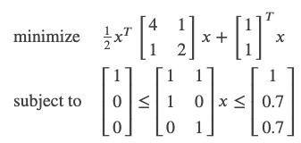

基本信息
- 官网
- 二次规划库，同OOQP
使用方式
-
问题描述
-

-
Python代码
import osqp
import numpy as np
from scipy import sparse
# Define problem data
P = sparse.csc_matrix([[4, 1], [1, 2]])
q = np.array([1, 1])
A = sparse.csc_matrix([[1, 1], [1, 0], [0, 1]])
l = np.array([1, 0, 0])
u = np.array([1, 0.7, 0.7])
# Create an OSQP object
prob = osqp.OSQP()
# Setup workspace and change alpha parameter
prob.setup(P, q, A, l, u, alpha=1.0)
# Solve problem
res = prob.solve()
- 简单易懂
-
C/C++代码
#include "osqp.h"
int main(int argc, char **argv) {
// Load problem data
c_float P_x[3] = {4.0, 1.0, 2.0, };//目标矩阵的非零值
c_int P_nnz = 3; //目标矩阵的非零值的个数
c_int P_i[3] = {0, 0, 1, }; //目标矩阵的非零值所在的row，与P_x一一对应
//P_p[i]=n,P_p[i+1]=m, 表示
//for k from n to m:
// 将P_x[k]填在第i列，P_i[k]行
c_int P_p[3] = {0, 1, 3, }; //每一列的第一个非零元素所对应的P_x数组的indice，最后一个值肯定是P_nnz
c_float q[2] = {1.0, 1.0, };
c_float A_x[4] = {1.0, 1.0, 1.0, 1.0, };
c_int A_nnz = 4;
c_int A_i[4] = {0, 1, 0, 2, };
c_int A_p[3] = {0, 2, 4, };
c_float l[3] = {1.0, 0.0, 0.0, };
c_float u[3] = {1.0, 0.7, 0.7, };
c_int n = 2;
c_int m = 3;
// Exitflag
c_int exitflag = 0;
// Workspace structures
OSQPWorkspace *work;
OSQPSettings *settings = (OSQPSettings *)c_malloc(sizeof(OSQPSettings));
OSQPData *data = (OSQPData *)c_malloc(sizeof(OSQPData));
// Populate data
if (data) {
data->n = n;
data->m = m;
data->P = csc_matrix(data->n, data->n, P_nnz, P_x, P_i, P_p);
data->q = q;
data->A = csc_matrix(data->m, data->n, A_nnz, A_x, A_i, A_p);
data->l = l;
data->u = u;
}
// Define solver settings as default
if (settings) {
osqp_set_default_settings(settings);
settings->alpha = 1.0; // Change alpha parameter
}
// Setup workspace
exitflag = osqp_setup(&work, data, settings);
// Solve Problem
osqp_solve(work);
// Cleanup
if (data) {
if (data->A) c_free(data->A);
if (data->P) c_free(data->P);
c_free(data);
}
if (settings) c_free(settings);
return exitflag;
};
-
Apollo基于osqp的minimum jerk path optimization
void PiecewiseJerkPathProblem::CalculateKernel(std::vector<c_float>* P_data,
std::vector<c_int>* P_indices,
std::vector<c_int>* P_indptr) {
const int n = static_cast<int>(num_of_knots_);
const int num_of_variables = 3 * n;
const int num_of_nonzeros = num_of_variables + (n - 1);
std::vector<std::vector<std::pair<c_int, c_float>>> columns(num_of_variables);
int value_index = 0;
// x(i)^2 * (w_x + w_x_ref)
for (int i = 0; i < n - 1; ++i) {
columns[i].emplace_back(
i, (weight_x_ + weight_x_ref_) / (scale_factor_[0] * scale_factor_[0]));
++value_index;
}
// x(n-1)^2 * (w_x + w_x_ref + w_end_x)
columns[n - 1].emplace_back(
n - 1, (weight_x_ + weight_x_ref_ + weight_end_state_[0]) /
(scale_factor_[0] * scale_factor_[0]));
++value_index;
// x(i)'^2 * w_dx
for (int i = 0; i < n - 1; ++i) {
columns[n + i].emplace_back(
n + i, weight_dx_ / (scale_factor_[1] * scale_factor_[1]));
++value_index;
}
// x(n-1)'^2 * (w_dx + w_end_dx)
columns[2 * n - 1].emplace_back(2 * n - 1,
(weight_dx_ + weight_end_state_[1]) /
(scale_factor_[1] * scale_factor_[1]));
++value_index;
auto delta_s_square = delta_s_ * delta_s_;
// x(i)''^2 * (w_ddx + 2 * w_dddx / delta_s^2)
columns[2 * n].emplace_back(2 * n,
(weight_ddx_ + weight_dddx_ / delta_s_square) /
(scale_factor_[2] * scale_factor_[2]));
++value_index;
for (int i = 1; i < n - 1; ++i) {
columns[2 * n + i].emplace_back(
2 * n + i, (weight_ddx_ + 2.0 * weight_dddx_ / delta_s_square) /
(scale_factor_[2] * scale_factor_[2]));
++value_index;
}
columns[3 * n - 1].emplace_back(
3 * n - 1,
(weight_ddx_ + weight_dddx_ / delta_s_square + weight_end_state_[2]) /
(scale_factor_[2] * scale_factor_[2]));
++value_index;
// -2 * w_dddx / delta_s^2 * x(i)'' * x(i + 1)''
for (int i = 0; i < n - 1; ++i) {
columns[2 * n + i].emplace_back(2 * n + i + 1,
(-2.0 * weight_dddx_ / delta_s_square) /
(scale_factor_[2] * scale_factor_[2]));
++value_index;
}
CHECK_EQ(value_index, num_of_nonzeros);
int ind_p = 0;
for (int i = 0; i < num_of_variables; ++i) {
P_indptr->push_back(ind_p);
for (const auto& row_data_pair : columns[i]) {
P_data->push_back(row_data_pair.second * 2.0);
P_indices->push_back(row_data_pair.first);
++ind_p;
}
}
P_indptr->push_back(ind_p);
}